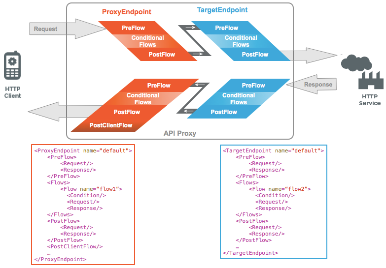

Flows are sequential stages along the processing path of API requests. Flows are how Apigee Edge provides places for you to apply logic and behavior at specific places from client to backend resource, then back to client.
Through your code in these stages, you can:
Flows are configured with XML that specifies what should happen in that particular flow. The following illustration shows how flows are ordered sequentially:

The following are larger stages that contain the flows (smaller stages) for processing requests and responses:
The ProxyEndpoint and TargetEndpoint both contain flows as a sequential set of stages for processing. These flows execute in the following order:
Executes first. Useful when you need to make sure that certain code executes before anything else happens.
For example, you usually don't want an API proxy to waste any resources on an unauthenticated user. Also, you don't want to service an app that has exceeded its quota. To support these requirements, you put security and quota policies in the PreFlow segment. That way, you don't need to worry about a condition failing to evaluate. The policies in this flow will always execute before any other processing takes place.
In the following example, SpikeArrest and Quota policies execute before processing passes to conditional flows.
<PreFlow name="MyPreFlow">
<Request>
<Step>
<Name>Spike-Arrest</Name>
</Step>
<Step>
<Name>Quota</Name>
</Step>
</Request>
<Response/>
</PreFlow>
Executes after the PreFlow and before the PostFlow. You can have multiple conditional flows, each specifying a different condition that tests for particular state values, effectively branching execution based on conditions. Conditional flows tell Edge, "When you see this, perform this logic."
You might want to convert XML to JSON only when the requesting app is running on a mobile device; or create a new HTTP response header when the /foo API resource is called; or you might want to return a targeted ad based on the data in the user's request. You can do this by setting up conditional flows.
For example, by attaching a Quota policy, then specifying a condition, you can enforce quota constraints only for requests where the condition is met. made to that flow URI and verb combination. The following specifies that the Quota policy should execute only if the request matches a particular path suffix and HTTP verb combination.
<Flow name="issue"> <Description/> <Request> <Step> <Name>Quota-policy</Name> </Step> </Request> <Response/> <Condition>(proxy.pathsuffix MatchesPath "/issue/**") and (request.verb = "GET")</Condition> </Flow>
In this configuration, if a GET request comes in on the API proxy with a URI pattern of .../issue/** (/issue/ with anything in the URI after the last forward slash), quota constraints are enforced on that API call.
In a conditional flow, the condition is evaluated in both the request and response. You cannot have separate conditions for request and response.
Executes after conditional flows. PostFlow is useful when you need to log some data, send a notification that something happened, transform the message format, and so on.
In the following example, an AssignMessage policy called SetResponseHeaders sets headers of the response message before Apigee Edge sends the response back to the client.
<PostFlow>
<Response>
<Step>
<Name>SetResponseHeaders</Name>
</Step>
</Response>
</PostFlow>
You can add an optional PostClientFlow to the ProxyEndpoint that executes after the response is returned to the requesting client app. Only MessageLogging policies can be attached to this flow. PostClientFlow reduces API proxy latency and makes information available for logging that is not calculated until after the response is sent, such as the client.send.start.time and client.send.end.time. The flow is used primarily for measuring the time interval between the start and end timestamps for the response message. For more information, see the following: